Guia de atualização de preços com o arquivo Datarey
Este guia vai te orientar no processo de atualização de preços com o arquivo fornecido pela Datarey.
O processo é simples e pode ser feito em poucos passos, garantindo que os preços dos medicamentos estejam sempre atualizados de acordo com as últimas publicações oficiais.
Nosso arquivo de preços contém apenas medicamentos publicados pelas revistas oficiais.
Não há perfumaria, varejinho ou outros produtos no arquivo.
Para atualizar os preços acesse:
- Menu Cadastro;
- Atualização;
- Datarey.
- Mensagem: "Esta operação deve ser realizada sem usuários utilizando o sistema!" (caso haja alguma tela do sistema aberta, por favor, feche-a para continuar) "Deseja baixar o arquivo de preços do FTP agora?" Confirme para ter a opção de baixar o arquivo mais recente.
- Download: Nessa tela você verá a data da postagem e o seu nome do arquivo.
- Clique em "Confirma" para baixar o arquivo de preços mais recente.
- Aguarde o download e descompactação do arquivo;
- Você verá uma lista de opções, tais como: "Descrição...", "Apresentação", "Princípio ativo"... Não há necessidade de alterar nada, a menos que você queira. Clique em "Próximo" para abrir a tela de itens; IMPORTANTE: Para atualizar todos os medicamentos de forma simples e rápida, tecle "F6" para selecionar tudo e "F7" para confirmar a atualização.Caso queira selecionar detalhadamente os itens, fabricantes ou seções a atualizar, continue a leitura para ver como fazer.
- Tecle "F5-Filtros" para ver as opções, sendo: - clique na lista de fabricante e marque ou desmarque os que deseja ou não atualizar. F2 marca ou desmarca todos; - clique na lista de seções e marque ou desmarque os que deseja ou não atualizar. F2 marca ou desmarca todas; Na parte inferior da tela você pode selecionar quais itens exibir para atualizar. As opções são: - Monitorados, Liberados, com aumento ou redução de preços e que não tiveram alteração de preços; Após selecionar as opções, clique em "Confirma" para voltar à tela de itens;
- Ao retornar para a tela de itens, conforme os filtros aplicados na tela anterior, você poderá teclar "F6" para selecionar todos itens ou selecionar item a item;
- Em seguida tecle "F7" para atualizar todos os itens filtrados e selecionados;
- Você verá uma tela de confirmação. Clique em "Sim" para prosseguir com a atualização dos preços;
- Ao final do processo você verá uma mensagem de que X itens foram atualizados;
- Caso tenha filtrado alguns itens, o sistema pede para salvar as opções que você fez para seja possível continuar com as mesmas opções já salvas. Pode confirmar.
- Ao concluir a atualização o sistema vai gerar 2 relatórios: - Lista todos os itens alterados, informando os valores anteriores e os novos, de acordo com as suas opções de atualização; - Relatório com as opções que você selecionou para fazer essa atualização e o resumo dos itens atualizados;
- Ao entrar novamente na atualização de preços, você terá a opção de recuperar as opções salvas na atualização anterior. Para isso clique em "Carregar prévia". Caso não queira, clique em "Nova prévia" para refazer todos os filtros de atualização.
Caso prefira, pode ver nas imagens abaixo como é o processo descrito acima.
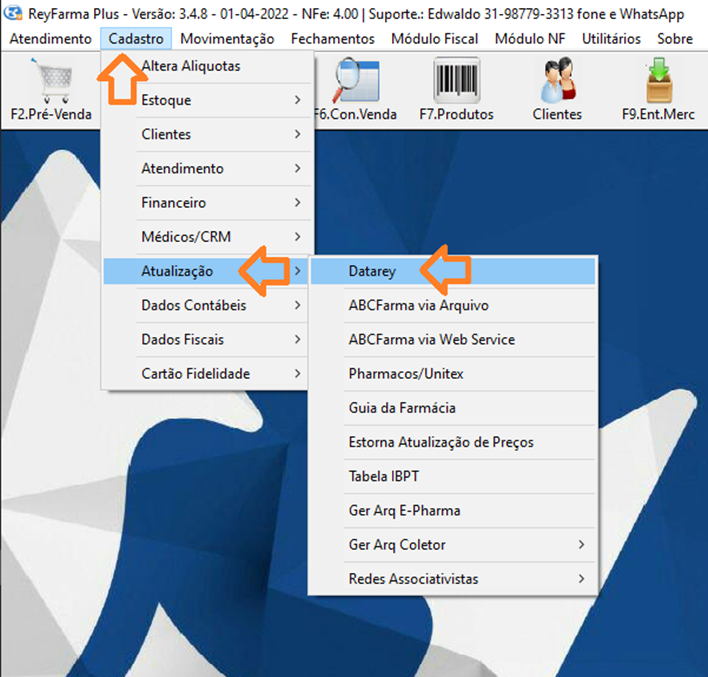
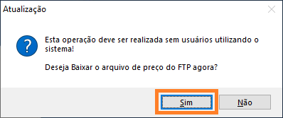
Confirme para ter a opção de baixar o arquivo mais recente.
Confirme para ter a opção de baixar o arquivo mais recente.
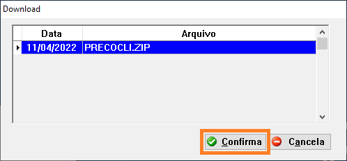
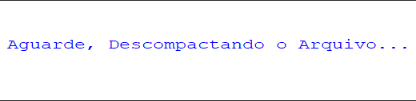
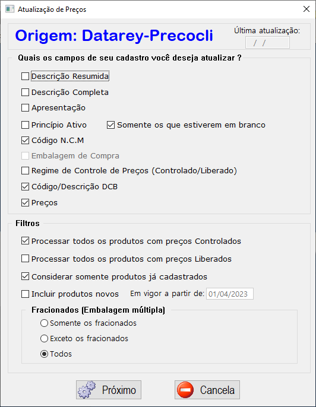
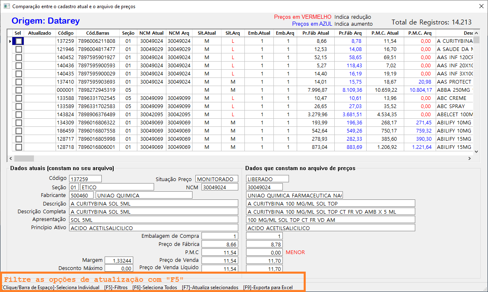
Caso queira selecionar detalhadamente os itens, fabricantes ou seções a atualizar, continue a leitura para ver como fazer.
Tecle "F5-Filtros" para ver as opções.
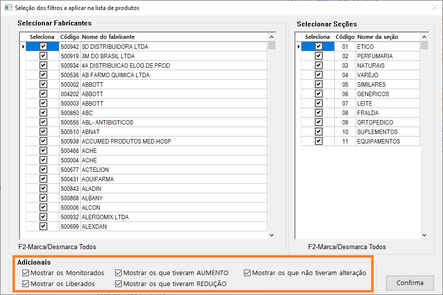
- clique na lista de fabricante e marque ou desmarque os que deseja ou não atualizar. F2 marca ou desmarca todos;
- clique na lista de seções e marque ou desmarque os que deseja ou não atualizar. F2 marca ou desmarca todas;
Na parte inferior da tela você pode selecionar quais itens exibir para atualizar. As opções são:
- Monitorados, Liberados, com aumento ou redução de preços e que não tiveram alteração de preços;
Após selecionar as opções, clique em "Confirma" para voltar à tela de itens.
- Ao retornar para a tela de itens, conforme os filtros aplicados na tela anterior, você poderá teclar "F6" para selecionar todos itens ou selecionar item a item;
- Em seguida tecle "F7" para atualizar todos os itens filtrados e selecionados;
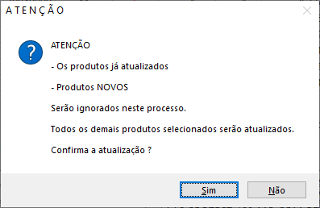
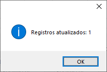
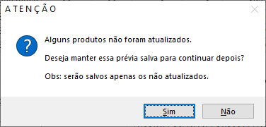
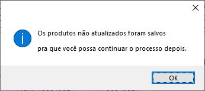
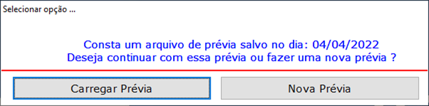
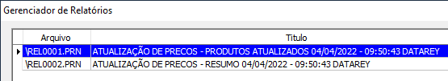
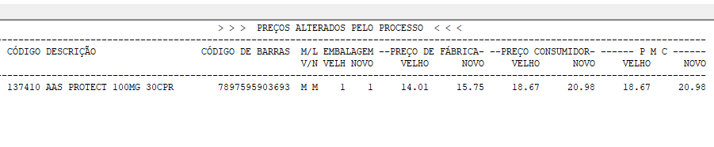
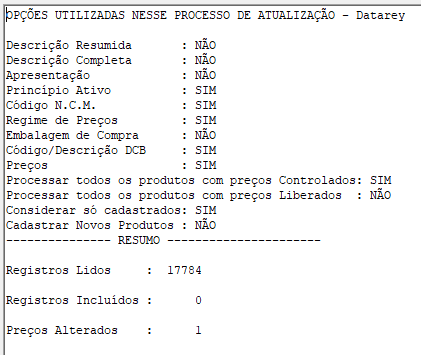